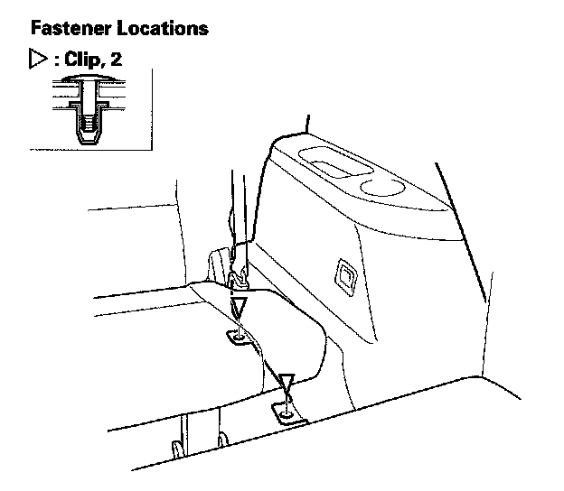
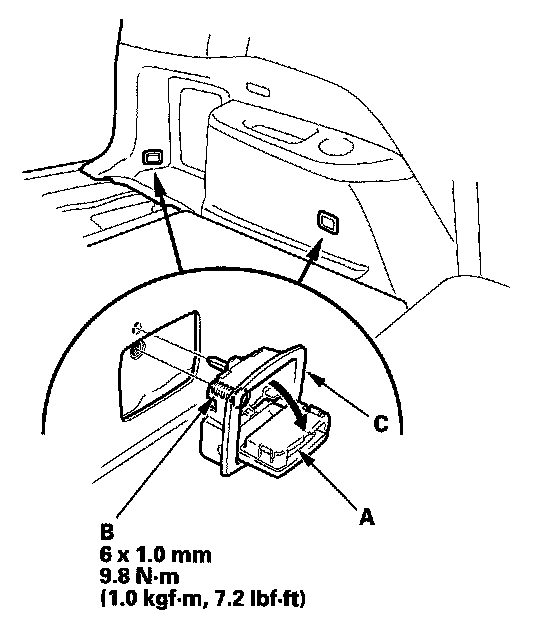
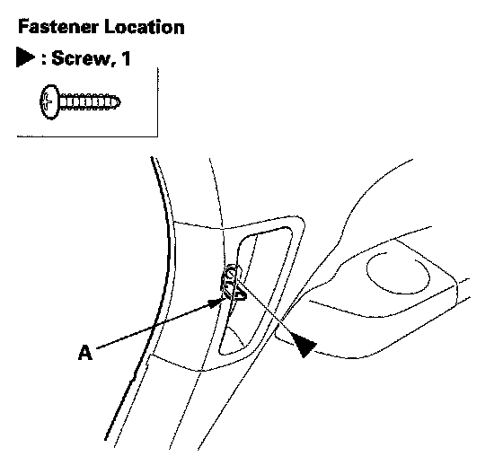
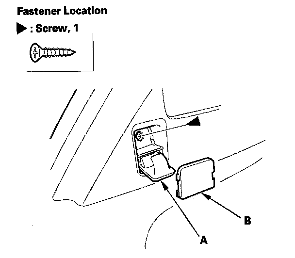
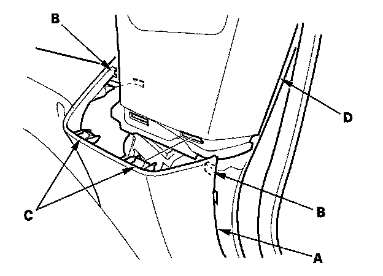
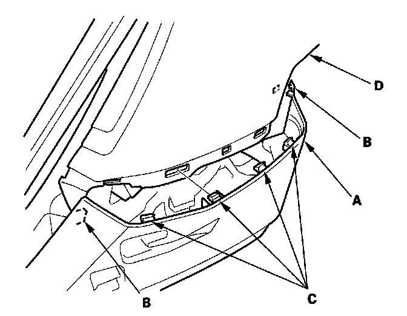
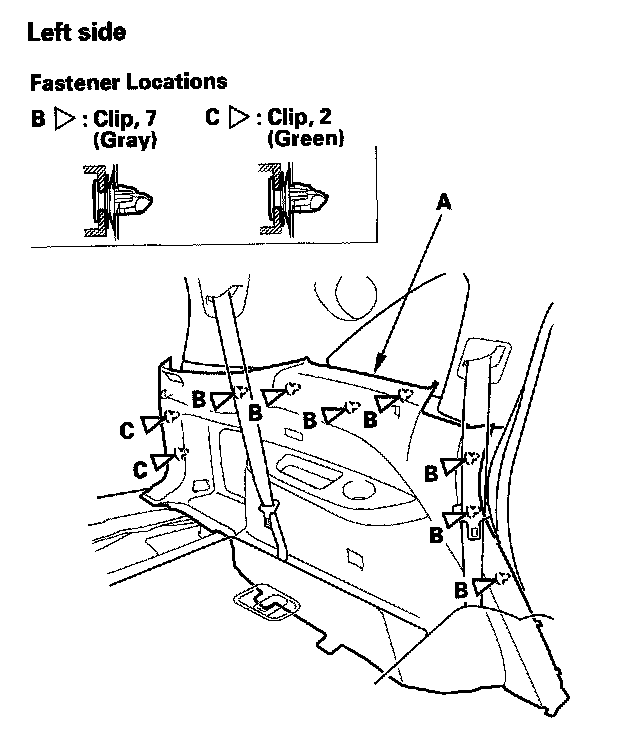

Trim Removal/Installation - Rear Side Area
Trim Removal/Installation - Rear Side AreaSpecial Tools Required
KTC trim tool set SOJATP2014 *
* Available through the American Honda Tool and Equipment Program
Rear Side Trim Panel Removal/Installation
NOTE:
- Put on gloves to protect your hands.
- Take care not to bend or scratch the trim and panels.
- Use the appropriate tool from the KTC trim tool set to avoid damage when removing components.
1. Remove these items:
- Rear door sill trim
- Rear door opening seal, as needed
- Tailgate weatherstrip, as needed
- Cargo floor lid
- Rear trim panel
- Cargo lid hinges
- Cargo rear trim panel

2. Raise the third row seat up, and remove the clips from under the third row seat.
3. Fold the third row seat-back forward.

4. Pry out the cover (A) and remove the bolt (B), then remove the tie down hook (C) (two places).

5. Right side: Pry out the lid (A) and remove the screw in the pull pocket.

6. Open the cargo hook (A). Pry out the cover (B) and remove the screw.

7. Pull out the front upper edge of the rear side trim panel (A) by hand to release the tabs (B) and hooks (C) from the quarter pillar trim (D).

8. Pull out the rear upper edge of the rear side trim panel (A) by hand to release the tabs (B) and hooks (C) from the quarter pillar trim (D).

9. Pull the rear side trim panel (A) back by hand to detach the clips (B, C).